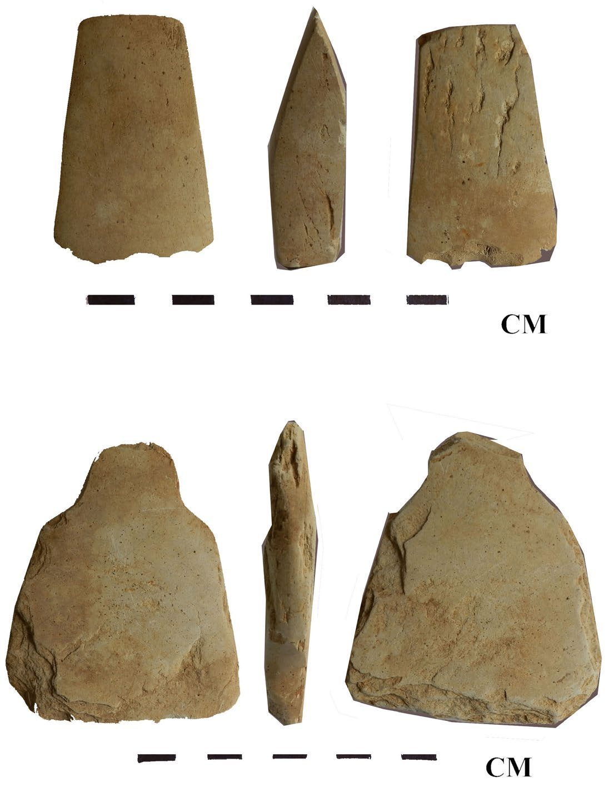

Palaeolithic
Garo Hills older tool assignments need comparison with celt-manufacturing waste. Padhan’s reassessment questions earlier classifications. This dispute cannot be settled by resemblance alone. See NE09.
BOOK 01 / EDITORIAL RESEARCH / 11 OCTOBER 2026
A site-by-site foundation for an Assam exam study book.
Checked passages and original-report acquisition leads have different labels. This inventory covers all eight states but is not an exhaustive census or a completed factual review. Further chapter drafting remains pending.
Garo Hills older tool assignments need comparison with celt-manufacturing waste. Padhan’s reassessment questions earlier classifications. This dispute cannot be settled by resemblance alone. See NE09.
Audit Selbalgiri’s claimed sequence and Manipur’s original reports. Small flakes and a Holocene age alone do not establish a microlithic Mesolithic industry. These are research tests, not chapter facts.
Compare excavated assemblages with surface collections. Treat tools, pottery, domesticated plants/animals and dates as separate evidence fields. A label in an old report does not prove every part of a farming economy.

Each row names the present-day state. Older reports using “Assam” may refer to territories in other present-day states. Site-name variants are preserved; coordinate and district verification is pending where not established.
| ID | Site / locality | State | Reported classification | Evidence | Dating | Source and locator | Status / next check |
|---|---|---|---|---|---|---|---|
| NE-SITE-001 | Daojali Hading | Assam | Neolithic assemblage | Stratified tools and pottery; 1961 excavation. | Pottery OSL LD1728: 2.7 ± 0.3 ka. | ARCH-02 pp.492–495, table 1 | checked passage Earliest report and sample convention; expand technological dossier. |
| NE-SITE-002 | Sarutaru | Assam | Neolithic assemblage | Ground celts and pottery in excavated contexts. | No measured occupation age adopted here. | ARCH-08 pp.194–198 | checked passage Reconcile field-season ranges and later relocation. |
| NE-SITE-003 | Marakdola / Morogdula | Assam | Post-Neolithic in Rao’s report | Wheel-turned kaolin pottery; comparison must retain its separate context. | Rao’s pottery-based chronology is interpretive. | ARCH-08 pp.198–205 | checked passage Compare later thesis trenches without assuming identical spot/layer. |
| NE-SITE-004 | Gawak Abri | Meghalaya | Neolithic assemblage | Pottery and lithic material; neighbouring comparison. | Pottery OSL LD1727: 2.3 ± 0.2 ka. | ARCH-02 pp.493–495, table 1 | checked passage Do not classify small flakes automatically as Mesolithic. |
| NE-SITE-005 | Misimagre / Michimagiri | Meghalaya | Neolithic reported; older assignments require review | Celt manufacture and debitage; older phase claims disputed. | No secure locality age adopted. | NE09 Section scraping; Lithic Technology | checked passage Compare original older claims, reduction sequence and dated contexts. |
| NE-SITE-006 | Rongram Eli | Meghalaya | Neolithic reported; older assignments require review | Reported surface lithics. | No secure locality age adopted. | NE09 site description | checked passage Compare original older claims, reduction sequence and dated contexts. |
| NE-SITE-007 | Chibagre | Meghalaya | Neolithic reported; older assignments require review | Finished tools reported with a habitation locality. | No secure locality age adopted. | NE09 site description; conclusion | checked passage Compare original older claims, reduction sequence and dated contexts. |
| NE-SITE-008 | Sopgre | Meghalaya | Neolithic reported; older assignments require review | Manufacturing scatter. | No secure locality age adopted. | NE09 site description | checked passage Compare original older claims, reduction sequence and dated contexts. |
| NE-SITE-009 | Kemeragre | Meghalaya | Neolithic reported; older assignments require review | Partly ground celt. | No secure locality age adopted. | NE09 site description | checked passage Compare original older claims, reduction sequence and dated contexts. |
| NE-SITE-010 | Daren Agal | Meghalaya | Neolithic reported; older assignments require review | Reported celts. | No secure locality age adopted. | NE09 site description | checked passage Compare original older claims, reduction sequence and dated contexts. |
| NE-SITE-011 | Rongchigre | Meghalaya | Neolithic reported; older assignments require review | Reported axe and flake. | No secure locality age adopted. | NE09 site description | checked passage Compare original older claims, reduction sequence and dated contexts. |
| NE-SITE-012 | Selbalgiri / Selbalgre II | Meghalaya | Reported pre-Neolithic / microlithic sequence to test | Priority case for the Mesolithic debate. | No date approved. | NE09 older-work references | original report pending Acquire IAR 1967–68 and Mahanta’s stratigraphic study. |
| NE-SITE-013 | Lawnongthroh / Law Nongthroh | Meghalaya | Neolithic in excavation report; later components | Ground tools, pottery and iron finds require layer-by-layer separation. | Reported 2960 ± 30 to 1640 ± 30 BP; retain sample-level distinction. | NE08 pp.1–5; dating and notes | checked passage Audit lab certificates, iron contexts and dated layers. |
| NE-SITE-014 | Myrkhan / Mirkhan | Meghalaya | Manufacturing and habitation interpreted | Unfinished tools, ceramics; disturbed surface distinguished from lower deposits. | Reported 3500 ± 30 BP; “Cal BP” wording needs review. Upper layer undated. | NE08 pp.7–9; note 4 p.17 | checked passage No date transfer from Lawnongthroh by resemblance alone. |
| NE-SITE-015 | Pynthorlangtein | Meghalaya | Reported Neolithic factory site | Acquire lithic and ceramic assemblage documentation. | No date approved. | NE08 bibliographic/regional lead | original report pending Acquire IAR 1992–93, p.75 and later reassessment. |
| NE-SITE-016 | Ranyak Khen (Mimi cave) | Nagaland | Mid-Holocene cave occupation; avoid automatic Mesolithic label | Excavated tools and fauna. | Ash Beta-260242: 5560 ± 40 BP; published 2σ 4460–4340 cal BCE, INTCAL04. | NE10 pp.260–264, 274–278 | checked passage Verify original depth/context string and modern calibration before changing published range. |
| NE-SITE-017 | Chungliyimti | Nagaland | Regional sequence to verify | Separate settlement, cave and burial evidence. | No date approved. | LEAD-05 catalogue / original reports pending | original report pending Acquire site-specific excavation and botanical/chronometric tables. |
| NE-SITE-018 | Purakha | Nagaland | Regional sequence to verify | Separate settlement, cave and burial evidence. | No date approved. | LEAD-05 catalogue / original reports pending | original report pending Acquire site-specific excavation and botanical/chronometric tables. |
| NE-SITE-019 | Photangkhun Longkhap | Nagaland | Regional sequence to verify | Separate settlement, cave and burial evidence. | No date approved. | LEAD-05 catalogue / original reports pending | original report pending Acquire site-specific excavation and botanical/chronometric tables. |
| NE-SITE-020 | Nongpok Keithelmanbi | Manipur | Reported Hoabinhian and later pottery sequence | Original assemblage and stratigraphy review required. | No date approved from secondary summaries. | LEAD-02 original report pending | original report pending Obtain O. K. Singh’s original report; distinguish radiocarbon, TL and typological assignments. |
| NE-SITE-021 | Napachik | Manipur | Reported Neolithic / Hoabinhian comparison | Original assemblage and stratigraphy review required. | No date approved from secondary summaries. | LEAD-02 original report pending | original report pending Obtain O. K. Singh’s original report; distinguish radiocarbon, TL and typological assignments. |
| NE-SITE-022 | Khangkhui cave | Manipur | Reported early lithics and fauna | Original assemblage and stratigraphy review required. | No date approved from secondary summaries. | LEAD-02 original report pending | original report pending Obtain O. K. Singh’s original report; distinguish radiocarbon, TL and typological assignments. |
| NE-SITE-023 | Songbu | Manipur | Reported cave lithics | Original assemblage and stratigraphy review required. | No date approved from secondary summaries. | LEAD-02 original report pending | original report pending Obtain O. K. Singh’s original report; distinguish radiocarbon, TL and typological assignments. |
| NE-SITE-024 | Tharon caves | Manipur | Reported Hoabinhian material | Original assemblage and stratigraphy review required. | No date approved from secondary summaries. | LEAD-02 original report pending | original report pending Obtain O. K. Singh’s original report; distinguish radiocarbon, TL and typological assignments. |
| NE-SITE-025 | Parsi Parlo | Arunachal Pradesh | Reported Neolithic investigations to verify | Primary site report acquisition required. | No date approved. | LEAD-01 original report pending | original report pending Read Ashraf’s report and relevant IAR entries; verify present-day district separately. |
| NE-SITE-026 | Taba | Arunachal Pradesh | Reported Neolithic investigations to verify | Primary site report acquisition required. | No date approved. | LEAD-01 original report pending | original report pending Read Ashraf’s report and relevant IAR entries; verify present-day district separately. |
| NE-SITE-027 | Daporijo | Arunachal Pradesh | Reported Neolithic investigations to verify | Primary site report acquisition required. | No date approved. | LEAD-01 original report pending | original report pending Read Ashraf’s report and relevant IAR entries; verify present-day district separately. |
| NE-SITE-028 | Haora river valley | Tripura | Reported stone-tool sequences to verify | River-terrace stratigraphy and raw materials need original review. | No quoted age approved until sample associations checked. | LEAD-03 original report pending | original report pending Do not give topsoil tools the age of an entire terrace. |
| NE-SITE-029 | Khowai river valley / Teliamura | Tripura | Reported stone-tool sequences to verify | River-terrace stratigraphy and raw materials need original review. | No quoted age approved until sample associations checked. | LEAD-03 original report pending | original report pending Do not give topsoil tools the age of an entire terrace. |
| NE-SITE-030 | Sonai Gang / Bairagipara | Tripura | Reported stone-tool sequences to verify | River-terrace stratigraphy and raw materials need original review. | No quoted age approved until sample associations checked. | LEAD-03 original report pending | original report pending Do not give topsoil tools the age of an entire terrace. |
| NE-SITE-031 | Zote | Mizoram | Neolithic-style finds; securely stratified phase not established in this study | Accidental celt from a paddy field. | No occupation age established. | NE07 pp.48–49 | checked passage Avoid dating finds from modern village history or living traditions. |
| NE-SITE-032 | Vangchhia | Mizoram | Neolithic-style finds; securely stratified phase not established in this study | Reported celt locality; distinguish excavated sherds and later monuments. | No occupation age established. | NE07 pp.49–50 | checked passage Avoid dating finds from modern village history or living traditions. |
| NE-SITE-033 | Sazep | Mizoram | Neolithic-style finds; securely stratified phase not established in this study | Reported celt; earlier associated objects not retained. | No occupation age established. | NE07 p.50 | checked passage Avoid dating finds from modern village history or living traditions. |
| NE-SITE-034 | Maite | Mizoram | Neolithic-style finds; securely stratified phase not established in this study | Two documented celts. | No occupation age established. | NE07 p.51 | checked passage Avoid dating finds from modern village history or living traditions. |
| NE-SITE-035 | Djangu / Dzongu survey localities | Sikkim | Polished-tool discoveries reported | 1980 survey; tools collected from terrace-field and village settings. | No measured occupation age in the consulted report. | NE05 pp.82–83 / PDF 93–94 | checked passage Distinguish survey collection from excavation; check later exploration reports. |
| NE-SITE-036 | Pakhyong / Pakyong and Shamsing | Sikkim | Polished-tool discoveries reported | 1980 survey; tools collected from terrace-field and village settings. | No measured occupation age in the consulted report. | NE05 pp.82–83 / PDF 93–94 | checked passage Distinguish survey collection from excavation; check later exploration reports. |
| NE-SITE-037 | Umiam river / Barapani dam locality | Meghalaya | Lower Palaeolithic claimed by author | Reported rolled schist handaxe and fresh sandstone chopper. | No measured age reported. | NE01 p.149 / PDF 163 | checked passage Original two-object claim needs technological and stratigraphic review; do not equate shape with age. |
| Chapter | Research / image commission |
|---|---|
| 01 / Reading evidence | Context and dating diagrams; faithful source plates; study-method conceptual 3D opener. |
| 02 / Landscapes | Sourced terrain and river maps; environment records with their own dates. |
| 03 / Earliest traces | Claim-versus-reassessment table; original lithic drawings and dated contexts. |
| 04 / Lifeways | Cave fauna, bone modifications and botanical evidence; distinguish reconstruction from observation. |
| 05 / Daojali | Full excavation and pottery/celt dossier; source scales and sample chronology. |
| 06 / Regional sites | State/site comparison map and plates, evidence strength beside each example. |
| 07 / Crafts | Reduction sequence, pottery impressions and raw materials, only from checked assemblages. |
| 08 / Cultivation | Macroremains, phytoliths and faunal comparisons; no unsupported domestication claims. |
| 09 / Connections | Documented similarities, alternative explanations and routes labelled hypothetical where needed. |
| 10 / Burials | Dima Hasao jars, burial contexts and dated comparisons; do not transfer Meghalaya dates to Assam jars. |
| 11 / Early historic | Layer-specific ceramics and metal finds; distinguish Marakdola from Sarutaru. |
| 12 / Knowledge limits | Evidence matrix and revision synthesis after the source audit. |
Consulted: pp.492–495; table 1 p.493; figures 2–3
Archival pottery samples; no surrounding sediments available for the dose estimate. Site-wide chronology cannot be inferred from one sample.
Source · Local copyConsulted: pp.194–205: Sarutaru, Marakdola and proposed chronology
Historical cultural hierarchy is not adopted. Relative pottery comparisons are not direct scientific ages.
Source · Local copyConsulted: Concept note pp.7–8 (PDF 13–14); Padhan abstract p.17 (PDF 23)
Conference abstracts and a framing essay, not full excavation reports.
Source · Local copyConsulted: Table 5.1; site descriptions; sections Lithic Technology, Palaeolithic Occupation and Garo Hills Assemblage, Conclusion; visible page labels XLVI–LIII
Listed pagination and visible Roman page labels differ; original edition must be reconciled. Survey results do not prove absence of older occupation throughout the region.
SourceConsulted: pp.1–9; comparative analysis pp.9–16; notes and licence p.17
Myrkhan upper layer undated (note 4). Table 1 arithmetic and BP/cal BP wording need original lab-record review. Ethnic continuity and migration are hypotheses.
Source · Local copyConsulted: pp.48–52 survey and celts; p.59 stratigraphic limitation; pp.55–56 contemporary pottery
Mostly solitary/surface finds. Modern feasting and pottery practices cannot date ancient deposits.
Source · Local copyConsulted: pp.260–264 excavation; pp.274–278 fauna, dating, interpretation
One dated ash context; full cave sequence needs more chronological controls. Published depth string is ambiguous; check original lab sheet.
SourceConsulted: Printed pp.82–83 / PDF pp.93–94, visually read; title leaf PDF p.4
Title leaf labels volume 1978–79 but article reports 1980 fieldwork; publication date needs colophon check. Surface and household finds; no measured age reported in these pages. Migration-direction assertion is not adopted.
Source · Local copyConsulted: Printed pp.148–149 / PDF pp.162–163 visually read; title and copyright leaves PDF pp.3–4
Barapani tool forms are typological claims without a measured age here. Summaries of earlier Garo Hills excavations require the original reports; absence of living megalithic practice at selected villages cannot be generalized.
Source · Local copyConsulted: Bibliographic entry 389 only
Acquire the full report; catalogue metadata cannot substantiate occupation phases.
SourceConsulted: References and cited discussion only
No Manipur laboratory result is approved from a later summary.
SourceConsulted: Discovery lead only
Resolve differing citations and inspect sediment/sample associations before using dates.
SourceConsulted: None: institutional server downloads timed out
Not counted as consulted; retry an official mirror.
SourceConsulted: Catalogue contents only
Acquire volumes and chronology tables; do not homogenize ancestral settlements and earlier cave deposits.
SourceDownloaded originals are research references. Redistribution and publication permissions need independent checking. Conceptual art is kept outside this evidence register.